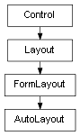

class cymel.ui.layout.AutoLayout¶

- class cymel.ui.layout.AutoLayout(*args, **kwargs)¶
ベースクラス:
FormLayout.FormLayout に自動レイアウト機能を追加したもの。
初期化。
- パラメータ:
Methods:
__init__([arg0, horizontal, spacing, ...])初期化。
redistribute([ratios, adjustIndex])子のコントロールを再配置する。
Methods Details:
- __init__(arg0=None, horizontal=False, spacing=1, sideSpacing=None, reversed=False, ratios=None, adjustIndex=None, **kwargs)¶
初期化。
- パラメータ: